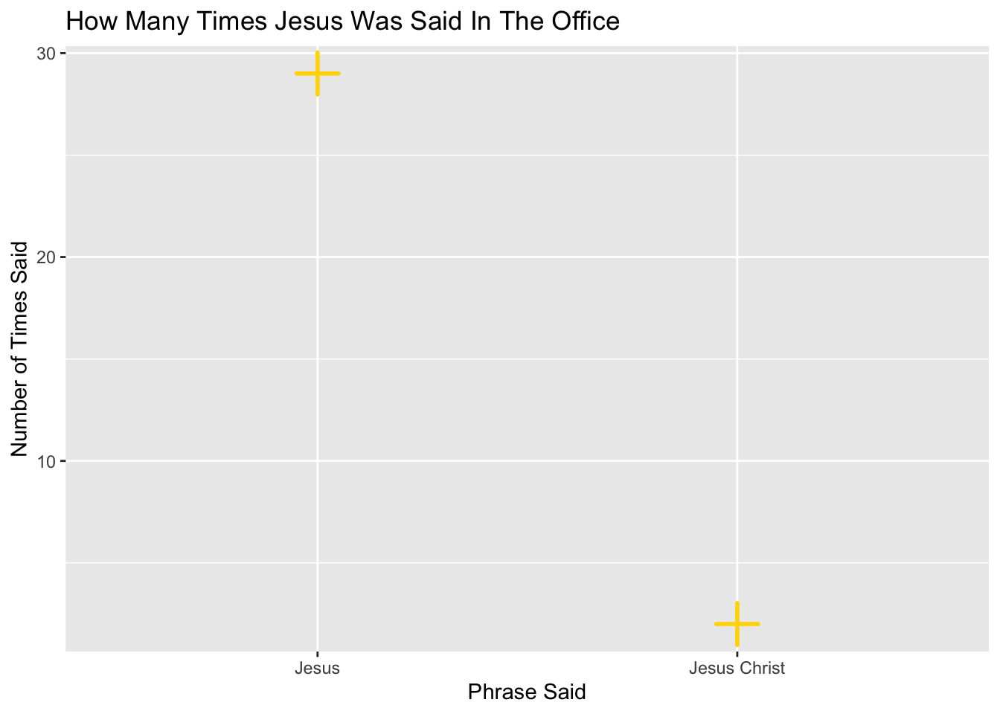

I got this data from the Kaggle website https://www.kaggle.com/datasets/fabriziocominetti/the-office-lines The direct link is not longer active, https://www.officequotes.net/ However, the cited source to the TV show is The Office. Created by Greg Daniels, performances by Steve Carell, Rainn Wilson, and John Krasinski, NBC, 2005–2013.
library(tidyverse)
── Attaching core tidyverse packages ──────────────────────── tidyverse 2.0.0 ──
✔ dplyr 1.1.4 ✔ readr 2.1.5
✔ forcats 1.0.0 ✔ stringr 1.5.1
✔ ggplot2 3.5.2 ✔ tibble 3.3.0
✔ lubridate 1.9.4 ✔ tidyr 1.3.1
✔ purrr 1.1.0
── Conflicts ────────────────────────────────────────── tidyverse_conflicts() ──
✖ dplyr::filter() masks stats::filter()
✖ dplyr::lag() masks stats::lag()
ℹ Use the conflicted package (<http://conflicted.r-lib.org/>) to force all conflicts to become errors
office <-read.csv("the-office_lines.csv")
head(office)
X Character
1 0 Michael
2 1 Jim
3 2 Michael
4 3 Jim
5 4 Michael
6 5 Michael
Line
1 All right Jim. Your quarterlies look very good. How are things at the library?
2 Oh, I told you. I couldn’t close it. So…
3 So you’ve come to the master for guidance? Is this what you’re saying, grasshopper?
4 Actually, you called me in here, but yeah.
5 All right. Well, let me show you how it’s done.
6 [on the phone] Yes, I’d like to speak to your office manager, please. Yes, hello. This is Michael Scott. I am the Regional Manager of Dunder Mifflin Paper Products. Just wanted to talk to you manager-a-manger. [quick cut scene] All right. Done deal. Thank you very much, sir. You’re a gentleman and a scholar. Oh, I’m sorry. OK. I’m sorry. My mistake. [hangs up] That was a woman I was talking to, so… She had a very low voice. Probably a smoker, so… [Clears throat] So that’s the way it’s done.
Season Episode_Number
1 1 1
2 1 1
3 1 1
4 1 1
5 1 1
6 1 1
library(ggplot2)df <-data.frame(group =c("Jesus Christ", "Jesus"),value =c(2, 29))ggplot(df, aes(x = group, y = value)) +geom_point(shape =3, size =6, stroke =1.5, color ="gold") +labs(title ="How Many Times Jesus Was Said In The Office", x ="Phrase Said", y ="Number of Times Said")

This graph illustrates how many times the word “Jesus” was said in “The Office.” The insights I gained from my plot is how often “Christ” follows “Jesus.” The graph shows the frequency of the collocation. It is suprising how uncommon it occurs.
# A tibble: 6 × 3
Character word office
<chr> <int> <int>
1 Alex 249 1
2 Andy 59501 72
3 Angela 19425 15
4 Angela And Dwight 22 1
5 Billy Merchant 221 1
6 Business Partner 122 1
This graph illustrates how many times the main characters of the “The Office” said office. Besides the pie chart, there is also a table with character names and the frequency of how often they said the word. The insights I gained from my plot is Michael, the main character, is the most frequent user of the word “office”, but no character makes up the majority.